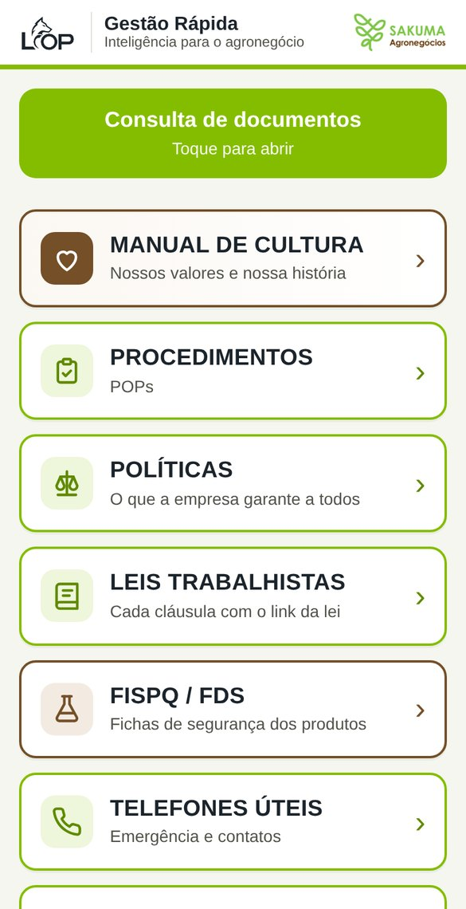
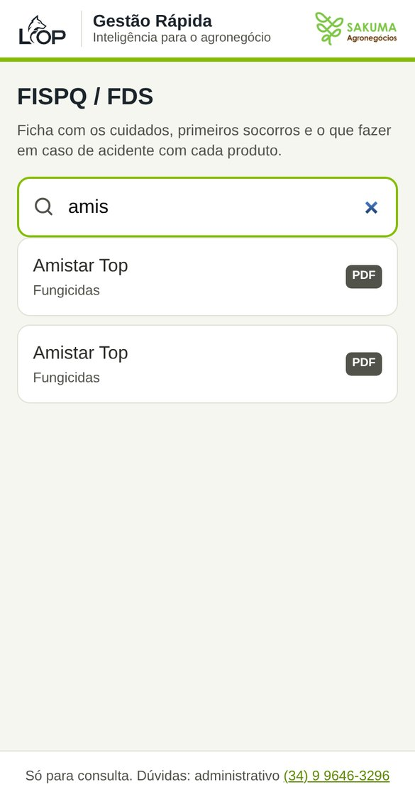
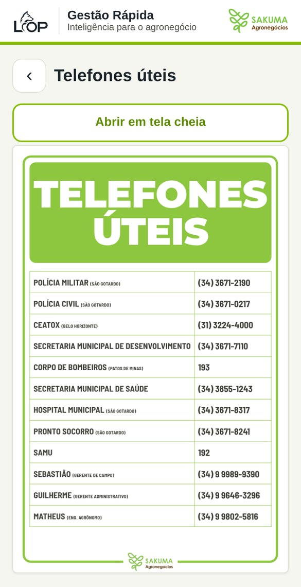

<!doctype html><html lang="pt-BR"><head><meta charset="utf-8">
<!-- IT 01 – Acesso aos documentos por QR Code (primeira IT da série nova, 10/11/2026).
     Folheto "Como acessar os documentos da fazenda" (10/11/2026, pedido do Guilherme: meia folha A4, depois
     "mais instrutivo, com imagens de dentro"). Duas cópias por A4, linha de corte no meio.
     As fotos de tela ficam em folheto-telas/ (tiradas da página consulta/). Gera o PDF da Sinalética:
     sinaletica/p/acesso-qr-code-folheto-instrucoes.pdf (imprimir em A4, sem margem). -->
<script src="../vendor/qrcode-generator.js"></script>
<style>
@page{size:210mm 297mm;margin:0}
html,body{margin:0;background:#fff;font-family:Arial,Helvetica,sans-serif;color:#1B232B}
.folha{width:210mm;height:297mm;position:relative}
.f{position:absolute;left:0;width:210mm;height:148.5mm;box-sizing:border-box;padding:6.5mm 9mm 5mm;display:flex;flex-direction:column}
.f.b{top:148.5mm}
.corte{position:absolute;left:0;right:0;top:148.5mm;border-top:.3mm dashed #8A8C82}
.corte span{position:absolute;right:6mm;top:-2.4mm;background:#fff;padding:0 1.5mm;font-size:7pt;color:#8A8C82}
.topo{display:flex;align-items:center;gap:4mm;border-bottom:.8mm solid #84BD00;padding-bottom:2mm;margin-bottom:3mm}
.topo img{height:10.5mm}
.topo h1{margin:0;font-size:15pt;line-height:1.05}
.topo .tit{flex:1}
.topo .it{border:.35mm solid #1B232B;border-radius:1.2mm;text-align:center;padding:1mm 2.2mm;font-size:7pt;line-height:1.25;color:#51534A}
.topo .it b{display:block;font-size:11pt;color:#1B232B}
.topo p{margin:.6mm 0 0;font-size:9pt;color:#51534A}
.meio{display:flex;gap:5mm;flex:1}
.passos{display:flex;gap:3.5mm;flex:1}
.passo{flex:1;display:flex;flex-direction:column;align-items:center}
.cel{width:31mm;height:58mm;border:1.1mm solid #1B232B;border-top-width:3.2mm;border-radius:4mm;overflow:hidden;background:#F4F6EF;position:relative;box-sizing:border-box}
.cel img{width:100%;display:block}
.cel::before{content:"";position:absolute;top:-2.1mm;left:50%;transform:translateX(-50%);width:6mm;height:1mm;border-radius:1mm;background:#51534A;z-index:2}
.num{margin-top:-3.2mm;z-index:3;width:6.5mm;height:6.5mm;border-radius:50%;background:#84BD00;border:.3mm solid #1B232B;font-weight:700;font-size:10.5pt;display:grid;place-items:center;box-sizing:border-box}
.leg{font-size:8.6pt;line-height:1.25;text-align:center;margin-top:1.2mm}
.leg b{display:block;font-size:9.4pt}
/* passo 1: câmera apontando para o QR */
.cam{position:absolute;inset:0;background:#2b3138;display:flex;flex-direction:column;align-items:center;justify-content:center}
.cam .link{position:absolute;top:5mm;left:2mm;right:2mm;background:#fff;border-radius:2mm;padding:1.2mm 1.5mm;font-size:5.6pt;line-height:1.2;color:#1B232B;box-shadow:0 .4mm 1mm rgba(0,0,0,.4)}
.cam .link b{display:block;font-size:6pt;color:#1a73e8}
.cam .mira{width:21mm;height:21mm;position:relative;margin-top:6mm}
.cam .mira svg{width:100%;height:100%;background:#fff;border-radius:1mm}
.cam .mira i{position:absolute;width:5mm;height:5mm;border:.7mm solid #84BD00}
.cam .mira i:nth-child(2){top:-1.6mm;left:-1.6mm;border-right:0;border-bottom:0}
.cam .mira i:nth-child(3){top:-1.6mm;right:-1.6mm;border-left:0;border-bottom:0}
.cam .mira i:nth-child(4){bottom:-1.6mm;left:-1.6mm;border-right:0;border-top:0}
.cam .mira i:nth-child(5){bottom:-1.6mm;right:-1.6mm;border-left:0;border-top:0}
.cam .disparo{position:absolute;bottom:3mm;width:6mm;height:6mm;border-radius:50%;border:.6mm solid #fff}
.dedo{position:absolute;top:8.5mm;right:3mm;font-size:11pt}
.lado{width:34mm;display:flex;flex-direction:column;gap:2mm;align-items:center;justify-content:center}
.qr{text-align:center}
.qr svg{width:28mm;height:28mm;display:block;margin:0 auto}
.qr b{display:block;font-size:8.6pt;margin-top:.4mm}
.qr small{display:block;font-size:7pt;color:#51534A}
.dicas{margin-top:3mm;display:flex;gap:3mm;font-size:8.3pt;line-height:1.3}
.dicas div{flex:1;border:.3mm solid #C9CCC3;border-left:1.4mm solid #744F28;border-radius:1.4mm;padding:1.4mm 2mm}
.dicas b{display:block;font-size:8.6pt}
.end{font-family:"Courier New",monospace;font-weight:700;font-size:7.4pt;white-space:nowrap}
.pe{display:flex;align-items:center;justify-content:space-between;margin-top:2.5mm;font-size:8.3pt}
.pe .duv{background:#84BD00;font-weight:700;padding:1.1mm 3mm;border-radius:1.2mm}
.lop{display:flex;align-items:center;gap:2mm}
.lop img{height:6.5mm}
.lop .barra{width:.25mm;align-self:stretch;background:#C9CCC3}
.lop .nome{display:flex;flex-direction:column;line-height:1.1}
.lop .nome b{font-size:8.6pt}
.lop .nome small{font-size:6.8pt;color:#51534A}
</style></head><body><div class="folha" id="folha"></div>
<script>
const URL='https://sakuma-agro.github.io/gestao-rapida-pessoas/consulta/';
const svg=(t,m=1)=>{const q=qrcode(0,'M');q.addData(t);q.make();return q.createSvgTag({cellSize:8,margin:m,scalable:true});};
const passo=(n,miolo,tit,txt)=>`<div class="passo"><div class="cel">${miolo}</div><div class="num">${n}</div><div class="leg"><b>${tit}</b>${txt}</div></div>`;
const um=c=>`<section class="f ${c}">
 <div class="topo"><div class="tit"><h1>COMO ACESSAR OS DOCUMENTOS DA FAZENDA</h1><p>Instrução de trabalho · pelo celular · sem senha · só para consulta</p></div><div class="it"><b>IT 01</b>Rev. 00 · 10/11/2026</div></div>
 <div class="meio">
  <div class="passos">
   ${passo(1,`<div class="cam"><div class="link"><b>sakuma-agro.github.io</b>Toque para abrir</div><span class="dedo">👆</span><div class="mira">${svg(URL,0)}<i></i><i></i><i></i><i></i></div><div class="disparo"></div></div>`,
     'Aponte a câmera','para o QR Code e toque no link que aparecer')}
   ${passo(2,'','Escolha o assunto','Manual de Cultura, POPs, políticas, leis, FISPQ, telefones e mapa')}
   ${passo(3,'','Busque a FISPQ','digite o nome do produto e toque na ficha')}
   ${passo(4,'','Leia o documento','role para ver tudo; a seta ‹ volta')}
  </div>
  <div class="lado">
   <div class="qr">${svg(URL)}<b>Documentos</b><small>Manual de Cultura, POPs, políticas, leis, telefones</small></div>
   <div class="qr">${svg(URL+'?g=fds')}<b>FISPQ / FDS</b><small>Fichas de segurança</small></div>
  </div>
 </div>
 <div class="dicas">
  <div><b>Guarde no celular</b>No Chrome, toque em ⋮ e em <b style="display:inline;font-size:inherit">Adicionar à tela inicial</b>.</div>
  <div><b>A câmera não leu?</b>Digite no navegador:<br><span class="end">sakuma-agro.github.io/gestao-rapida-pessoas/consulta</span></div>
  <div><b>Precisa de internet</b>Wi-Fi ou dados móveis. Não pede senha.</div>
 </div>
 <div class="pe"><span class="duv">Dúvidas: administrativo (34) 9 9646-3296</span>
  <span class="lop"><span class="barra"></span><span class="nome"><b>Gestão Rápida</b><small>Inteligência para o agronegócio</small></span></span></div>
</section>`;
document.getElementById('folha').innerHTML=um('a')+'<div class="corte"><span>✂ cortar aqui</span></div>'+um('b');
Promise.all([...document.images].map(i=>i.complete?1:new Promise(o=>{i.onload=o;i.onerror=o}))).then(()=>window.pronto=1);
</script></body></html>
